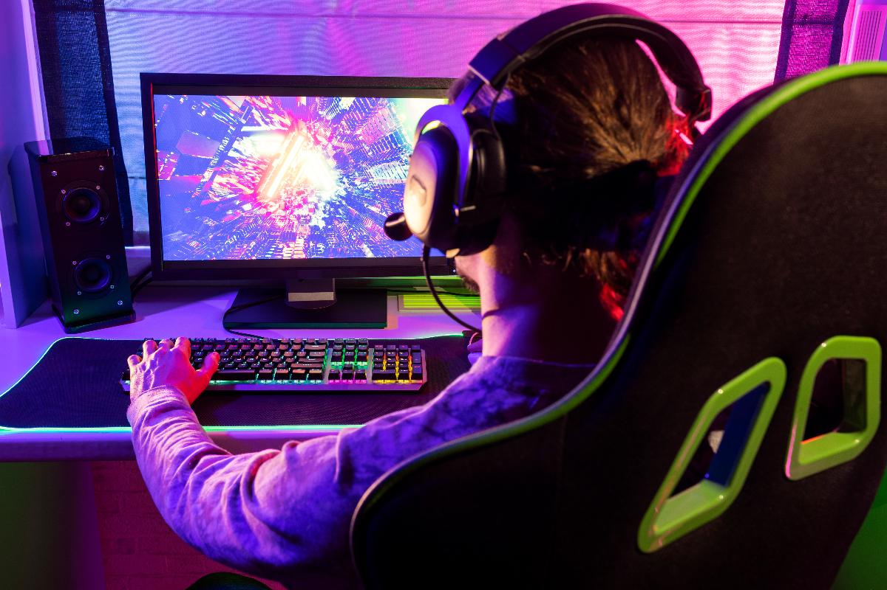
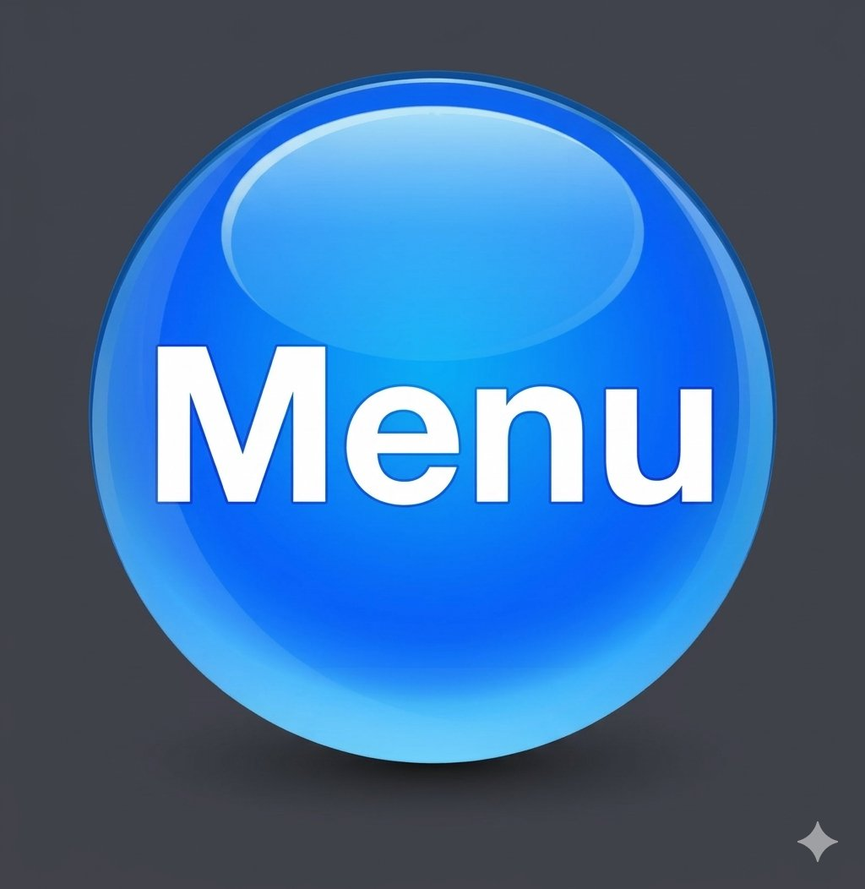
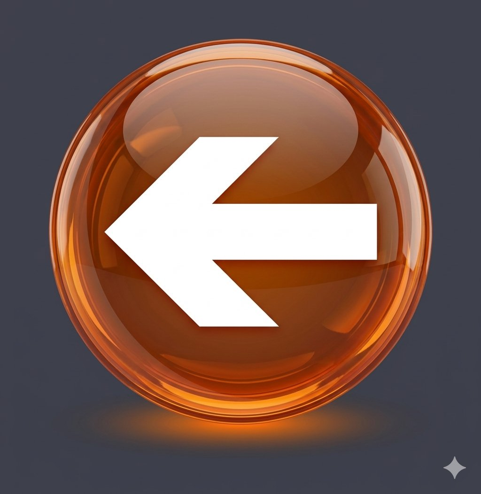
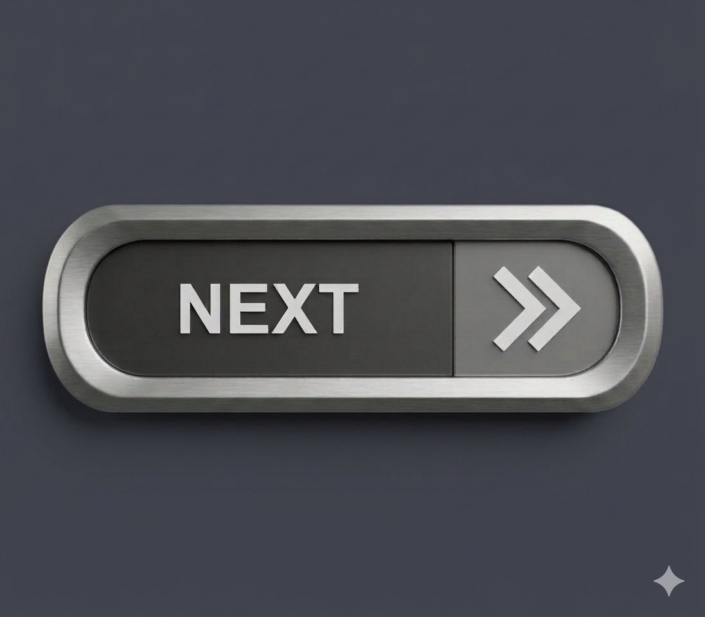

Si quieres ser pro player necesitas practicar mucho, tener buena PC o celular y jugar en equipo. Todos empezaron jugando por diversion.
| Paso | Que hacer |
| 1 | Elige un juego que te guste |
| 2 | Practica todos los dias minimo 2 horas |
| 3 | Mira videos de pros en YouTube y Twitch |
| 4 | Unete a un equipo de tu escuela o con amigos |



Ever Marin Palacios - 3AP Programacion - CECyTEJ Zapotiltic